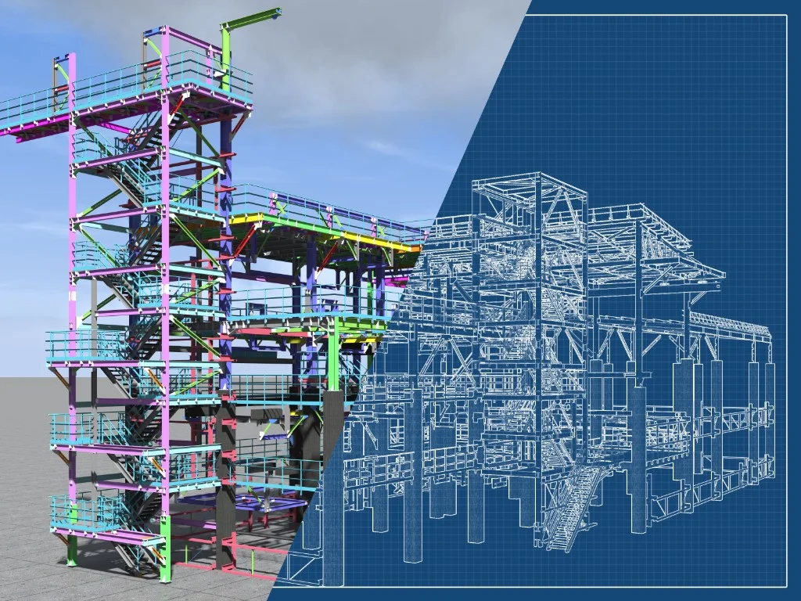
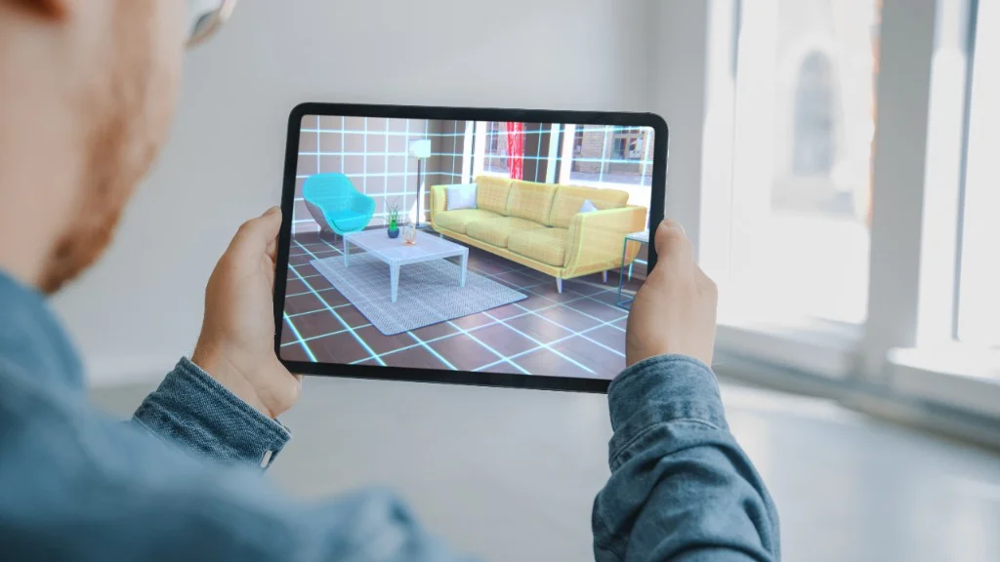
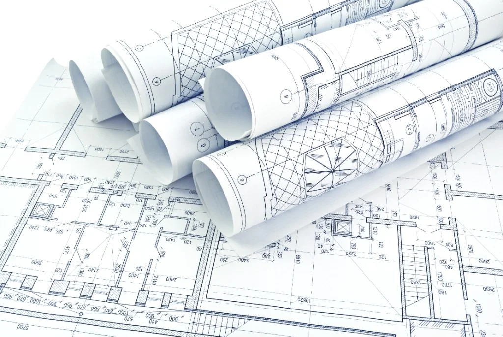

カスタマイズのご提案
点群処理・LiDARスキャン・BIMで建設DXと業務最適化を実現。御社の課題に沿ったソリューションをご提案します。

建設DX・業務最適化のカスタマイズのご提案
点群処理・LiDARスキャン・BIMで御社の課題に沿ったソリューションをご提案します。
私たちの技術で解決できる
点群データによる差分取得と進捗管理、デジタル検査管理の効率化、点群から自動で3Dモデル生成、点検アプリによる業務自動化、デジタルツインによる遠隔管理、検査テンプレート化と報告書自動化、図面自動生成による積算・レポート自動化、スキャンから2D図面自動生成とCAD/BIM連携、業務フローに最適化したライト版ツール、調査から報告まで一元化したアプリ開発など、お客様の課題に応じた最適なソリューションをご提案します。
課題解決事例
様々な業種・業態のお客様の課題を、コア技術を活用して解決する事例をご紹介します。
| 業種 | お客様 | 業務プロセス | 課題 | 課題詳細 | 現状・備考 | 解決策 | 実現可能性 |
|---|---|---|---|---|---|---|---|
| 土木 | 大手土木道路施工会社 | 道路工事 | 出来高・進捗管理 | 出来高・進捗管理がアナログ（手作業）で行われている | 出来高進捗管理が紙・手入力中心 | 点群データで差分を取得し、予算と出来高の差異をシステムで一元管理 | 可能 |
| 建築 | 大手建設会社 | 竣工 | 竣工検査 | 竣工検査に時間がかかりすぎる | 音声入力アプリは使っているが、さらに高速・合理化したい | より効率的なデジタル検査管理の仕組みを導入 | 可能だが費用対効果に懸念 |
| サブコン | 大手サブコン | 空調設備 | リノベーション | 配管設備更新時のBIM化に時間がかかる | Leicaでの点群取得・InfiPointsでの3D化の時間短縮は可能 | 点群から自動で3Dモデルを生成 | 可能 |
| 住宅 | 大手住宅メーカー | 定期点検 | 定期点検業務 | 定期点検が紙とペンによるアナログ運用 | 顧客とのアポイント調整にも工数がかかっている | 点検アプリ導入により点検・調整時間を短縮 | 可能性あり（費用対効果と優先度が課題） |
| 商業施設 | 大手商業施設運営会社 | 営繕管理 | カラオケ店舗営繕 | 約2000ルームを営繕部隊が出張ベースで管理 | 点群でデジタルツイン化し課題管理を検討 | 点群によるデジタルツインで遠隔管理 | 点群取得に膨大な時間がかかり実現性に課題 |
| 住宅 | 大手住宅インスペクション会社 | 住宅インスペクション | 点検業務がアナログで非効率 | 紙とペンによる点検、写真管理・報告作成に時間がかかる。複数人同時検査、検査順序、立面図なし物件、再撮影対応など運用課題が多い | 年70件→100件以上に増加見込み。約4割は資料なし物件 | 点検アプリにより検査テンプレート化、図面マーキング、複数担当対応、写真・音声入力、報告書自動化を実現 | 可能（ROIと導入優先度の整理が必要） |
| 補償コンサル | 大手補償コンサル会社 | 補償調査（木造物件） | 調査後工程の工数が極端に大きい | 紙野帳→図面→積算→報告書作成で15〜20人日。国指定フォーマット対応で二度手間が発生 | 高精度・短納期要求。業界共通課題 | 図面自動生成を起点に積算・レポートを段階的に自動化した業務特化システム | 可能（補助金＋業界横展開でROI成立） |
| 製造業（設備設計） | 大手設備設計会社 | トイレ改修調査・設計 | 図面化・設計会社との往復がボトルネック | 紙計測→図面作成→設計会社返送に約3日。修正が多発 | iPhone SEのみ。既存ツールは品質不足 | スキャンから2D図面自動生成＋CAD/BIM連携で設計工程を短縮 | 可能（小規模PoCで効果検証前提） |
| 不動産・ハウジング | 大手不動産・ハウジング会社 | リノベ初期検討（現調〜概算） | 関係者間の調整コストが高い | 不動産⇔顧客⇔工務店のやり取りが煩雑。既存ツールは機能過多 | 精度よりコミュニケーション重視 | 平面図・白モデル・簡易レイアウト・見積依頼に絞ったライト版ツール | 可能（段階導入・ライト版前提） |
| ハウジング・工務店 | 大手ハウジング・工務店 | リノベ現地調査〜報告 | 調査・書類・連絡が分断 | 現調前後の情報、3D、書類、業者連携が別管理 | 補助金（事業再構築）活用予定 | 調査〜報告〜業者連携を一元化した受託アプリ開発 | 可能（補助金前提・受託案件） |
私たちの技術優位性と特徴
点群処理やLiDARスキャン、アプリ、クラウド、AIをコア技術として、お客様の業務フローに最適化したソリューションを提供します。 これらの技術を組み合わせることで、従来のアナログ業務をデジタル化し、業務効率を大幅に向上させることができます。

コア
LiDARスキャン
点群、BIM、平面図、計測、部屋作成、建具認識
課題管理
マルチモーダル
業務最適化
音声認識
画像認識
点群・BIM
モデル生成
クラウド
ローカル
機能
レポート
見積もり
2D/3D
補助金活用しソフトウェア開発
補助金を活用し費用対効果を改善
カスタマイズソリューションの開発費用を抑えるため、様々な補助金制度の活用を推奨しています。 補助金を導入コンサルのご紹介も可能です。
| 補助金名 | 概要 | AIソフト開発（B2B業務支援）での利用可否 | 補助上限・補助率 | 応募期限・スケジュール | 公式サイトURL |
|---|---|---|---|---|---|
| 中小企業新事業進出促進補助金 | 新市場への新規事業進出や高付加価値分野への進出を支援 | 利用可能。AIを活用したB2B業務支援ソフトウェアの新規開発を含めることが可能 | 上限2,500万円〜7,000万円（賃上げ特例で最大9,000万円）／補助率1/2 | 年複数回募集。2025年12月募集、2026年も複数回予定 | https://shinjigyou-shinshutsu.smrj.go.jp |
| 中小企業省力化投資補助金（一般型） | 人手不足解消や業務自動化のための設備・システム導入を支援 | 条件付きで利用可能。自社業務の省力化を目的としたAIシステム導入の場合 | 上限750万円〜1,000万円（従業員数・賃上げ特例により変動）／補助率1/2〜2/3 | 一般型は年3〜4回募集。2026年初旬に募集予定 | https://shoryokuka.smrj.go.jp |
| ものづくり補助金 | 新製品・新サービスの開発や生産性向上投資を支援 | 利用可能。AIソフトウェアを含む新サービス開発を含めることが可能 | 上限750万円〜2,500万円（特別枠で最大4,000万円）／補助率1/2〜2/3 | 年約3〜5回募集。2026年も継続予定 | https://portal.monodukuri-hojo.jp |
| 新製品・新技術開発助成事業（東京都） | 東京都内の中小企業の研究開発・試作を支援 | 利用可能。B2B向けAIソフトウェアの試作・研究開発フェーズに適している | 上限2,500万円／補助率1/2（賃上げ特例で3/4） | 年1回募集。通常5〜6月頃（次回は2026年度予定） | https://www.tokyo-kosha.or.jp/support/josei/jigyo/shinseihin.html |
| 成長型中小企業等研究開発支援事業（Go-Tech） | 産学連携による高度な研究開発を最大3年間支援 | 利用可能。高度なAIアルゴリズムや基盤技術開発に適している | 上限9,750万円（標準枠）／補助率2/3 | 年1回募集。通常冬〜早春 | https://www.chusho.meti.go.jp/sapoin/index.php |
補助金を導入コンサルのご紹介も可能です。
応用例

1. リノベーションアプリとWEBシステム
現地調査からリフォームプラン提案まで
予算 : 5000万円
左の機能を全て導入

2. 施設管理アプリとWEBシステム
複数の地下施設をオンプレミスで管理
予算 : 1000万円
コア機能と複数ユーザークラウド管理
3. 商業施設管理アプリとWEBシステム
複数の施設をオンプレミスで管理
予算 : 2500万円
コア機能とAI機能、現地調査・レポート
お問い合わせ・資料請求
カスタマイズソリューションについてご相談ください
まずは無料でお試しください。
まずは無料でお試しください
お急ぎの場合は、直接お電話またはメールでお問い合わせください
株式会社One Technology Japan
TEL: 03-5324-2652（代表）
MAIL: contact@onetech.jp